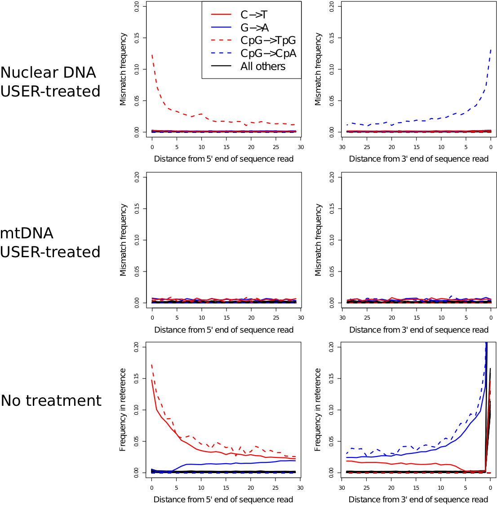
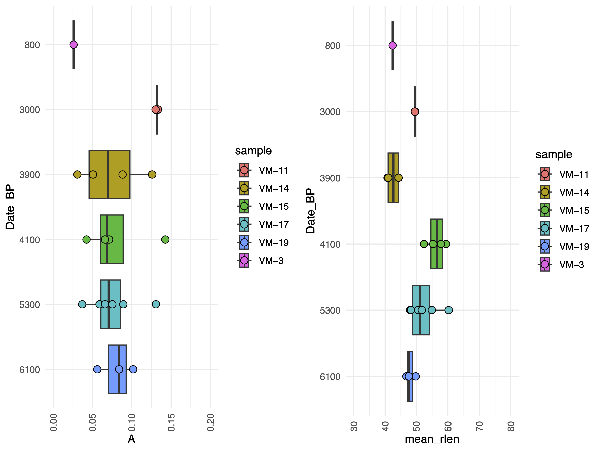

# Read output of samtools depth commans
df <- read.delim("Y.pestis_sample10.sorted.boc", header = FALSE, sep = "\t")
names(df) <- c("Ref", "Pos", "N_reads")
# Split reference genome in tiles, compute breadth of coverage for each tile
N_tiles <- 500
step <- (max(df$Pos) - min(df$Pos)) / N_tiles
tiles <- c(0:N_tiles) * step; boc <- vector()
for(i in 1:length(tiles))
{
df_loc <- df[df$Pos >= tiles[i] & df$Pos < tiles[i+1], ]
boc <- append(boc, rep(sum(df_loc$N_reads > 0) / length(df_loc$N_reads),
dim(df_loc)[1]))
}
boc[is.na(boc)]<-0; df$boc <- boc
plot(df$boc ~ df$Pos, type = "s", xlab = "Genome position", ylab = "Coverage")
abline(h = 0, col = "red", lty = 2)
mtext(paste0(round((sum(df$N_reads > 0) / length(df$N_reads)) * 100, 2),
"% of genome covered"), cex = 0.8)12 Authentication
Self guided: chapter environment setup
For this chapter’s exercises, if not already performed, you will need to download the chapter’s dataset, decompress the archive, and create and activate the conda environment.
Do this, use wget or right click and save to download this Zenodo archive: 10.5281/zenodo.13759228, and unpack
tar xvf authentication.tar.gz
cd authentication/You can then create the subsequently activate environment with
conda env create -f authentication.yml
conda activate authentication
Warning
There are additional software requirements for this chapter
Please see the relevant chapter section in Before you start before continuing with this chapter.
In ancient metagenomics we typically try to answer two questions: “Who is there?” and “How ancient?”, meaning we would like to detect an organism and investigate whether this organism is ancient. There are three typical ways to identify the presence of an organism in a metagenomic sample:
- alignment of DNA fragments to a reference genome (Bowtie, BWA, Malt etc.)
- taxonomic (kmer-based) classification of DNA fragments (Kraken, MetaPhlan, Centrifuge etc.)
- de-novo genome assembly (Megahit, metaSPAdes etc.)
The first two are reference-based, i.e. they assume a similarity of a query ancient DNA fragment to a modern reference genome in a database. This is a strong assumption, which might not be true for very old or very diverged ancient organisms. This is the case when the reference-free de-novo assembly approach becomes powerful. However, de-novo assembly has its own computational challenges for low-coverage ancient metagenomic samples that typically contain very short DNA fragments.

While all the three types of metagenomic analysis are suitable for exploring composition of metagenomic samples, they do not directly validate the findings or provide information about ancient or endogenous status of the detected orsganism. It can happen that the detected organism
- was mis-identified (the DNA belongs to another organism than initially thought),
- has a modern origin (for example, lab or sequencing contaminant)
- is of exogenous origin (for example, an ancient microbe that entered the host post-mortem).
Therefore, additional analysis is needed to follow-up each hit and demonstrate its ancient origin. Below, we describe a few steps that can help ancient metagenomic researchers to verify their findings and put them into biological context.
In this chapter, we will cover:
- How to recognise that a detected organism was mis-identified based on breadth / evenness of coverage
- How to validate findings by breadth of coverage filters via k-mer based taxonomic classification with KrakenUniq
- How to validate findings using alignments and assess mapping quality, edit distance and evenness of coverage profile
- How to detect modern contaminants via deamination profile, DNA fragmentation and post-mortem damage (PMD) scores
- How negative (blank) controls can help disentangle ancient organisms from modern contaminants
- How microbial source tracking can facilitate separating endogenous and exogenous microbial communities
We will also cover
- Introduction to combining authentication with taxonomic profiling
- How to analyse deamination from a metagenomic dataset with metaDMG
- How to investigate the main metaDMG statistics with R
12.1 Simulated ancient metagenomic data
In this chapter, we will use 10 pre-simulated metagenomics with gargammel ancient metagenomic samples from Pochon et al. (2022).

Self guided: data preparation
The raw simulated data can be accessed via https://doi.org/10.17044/scilifelab.21261405
To download the simulated ancient metagenomic data please use the following command lines:
mkdir ameta/ && cd ameta/
wget https://figshare.scilifelab.se/ndownloader/articles/21261405/versions/1 \
&& unzip 1 && rm 1The DNA reads were simulated with damage, sequencing errors and Illumina adapters, therefore one will have to trim the adapters first:
for i in $(ls *.fastq.gz)
do
sample_name=$(basename $i .fastq.gz)
cutadapt -a AGATCGGAAGAG --minimum-length 30 -o ${sample_name}.trimmed.fastq.gz ${sample_name}.fastq.gz -j 4
doneNow, after the basic data pre-processing has been done, we can proceed with validation, authentication and decontamination analyses.
In here you will see a range of directories, each representing different parts of this tutorial. One set of trimmed ‘simulated’ reads from Pochon et al. (2022) in rawdata/.
12.2 Genomic hit confirmation
Once an organism has been detected in a sample (via alignment, classification or de-novo assembly), one needs to take a closer look at multiple quality metrics in order to reliably confirm that the organism is not a false-positive detection and is of ancient origin. The methods used for this purpose can be divided into modern validation and ancient-specific validation criteria. Below, we will cover both of them.
12.3 Modern genomic hit validation criteria
The modern validation methods aim at confirming organism presence regardless of its ancient status. The main approaches include evenness / breadth of coverage computation, assessing alignment quality, and monitoring affinity of the DNA reads to the reference genome of the potential host.
12.3.1 Depth vs breadth and evenness of coverage
Concluding organism presence by relying solely on the numbers of assigned sequenced reads (aka depth of coverage metric) turns out to be not optimal and too permissive, which may result in a large amount of false-positive discoveries. For example, when using alignment to a reference genome, the mapped reads may demonstrate non-uniform coverage as visualised in the Integrative Genomics Viewer (IGV) below.

In this case, DNA reads originating from another microbe were (mis-)aligned to Yersina pestis reference genome. It can be observed that a large number the reads align only to a few conserved genomic loci. Therefore, even if many thousands of DNA reads are capable of aligning to the reference genome, the overall uneven alignment pattern suggests no presence of Yersina pestis in the metagenomic sample. Thus, not only the number of assigned reads (proportional to depth of coverage metric) but also the breadth and evenness of coverage metrics become of particular importance for verification of metagenomic findings, i.e. hits with DNA reads uniformly aligned across the reference genome are more likely to be true-positive detections (Figure 12.3).
In the next sections, we will show how to practically compute the breadth and evenness of coverage via KrakenUniq and Samtools.
12.3.2 Breadth of coverage via KrakenUniq
Here we are going to demonstrate that one can assess breadth of coverage information already at the taxonomic profiling step. Although taxonomic classifiers do not perform alignment, some of them, such as KrakenUniq and Kraken2 provide a way to infer breadth of coverage in addition to the number of assigned reads to a taxon. This allows for immediate filtering out a lot of false positive hits. Since Kraken-family classifiers are typically faster and less memory-demanding, i.e. can work with very large reference databases, compared to genome aligners, they provide a robust and fairly unbiased initial taxonomic profiling, which can still later be followed-up with proper alignment and computing evenness of coverage as described above.
Self guided: data preparation
⚠️ This step will require large amounts of memory and CPUs!, so if running yourself please note this step is better suited for a server, HPC cluster, or the cloud rather than on a laptop!
To profile the data with KrakenUniq one needs a database, a pre-built complete microbial NCBI RefSeq database can be accessed via https://doi.org/10.17044/scilifelab.21299541.
Please use the following command line to download the database:
cd krakenuniq/ ## If you've left it...
wget https://figshare.scilifelab.se/ndownloader/articles/21299541/versions/1 \
&& unzip 1 && rm 1The following example command is how you would execute KrakenUniq.
for i in $(ls *.trimmed.fastq.gz)
do
krakenuniq --db KRAKENUNIQ_DB --fastq-input $i --threads 20 \
--classified-out ${i}.classified_sequences.krakenuniq \
--unclassified-out ${i}.unclassified_sequences.krakenuniq \
--output ${i}.sequences.krakenuniq --report-file ${i}.krakenuniq.output
doneTaxonomic k-mer-based classification of the ancient metagenomic reads can be done via KrakenUniq. However as this requires a very large database file, the results from running KrakenUniq on the 10 simulated genomes can be found in.
cd krakenuniq/KrakenUniq by default delivers a proxy metric for breadth of coverage called the number of unique kmers (in the 4th column of its output table) assigned to a taxon. KrakenUniq output can be easily filtered with respect to both depth and breadth of coverage, which substantially reduces the number of false-positive hits.

We can filter the KrakenUniq output with respect to both depth (taxReads) and breadth (kmers) of coverage with the following custom Python script, which selects only species with at east 200 assigned reads and 1000 unique k-mers. After the filtering, we can see a Yersinia pestis hit in the sample 10 that possess the filtering thresholds with respect to both depth and breadth of coverage.
Run this from within the krakenuniq/ directory.
for i in $(ls *.krakenuniq.output)
do
../scripts/filter_krakenuniq.py $i 1000 200 ../scripts/pathogensfound.very_inclusive.tab
doneWe can also easily produce a KrakenUniq taxonomic abundance table krakenuniq_abundance_matrix.txt using the custom R script below, which takes as argument the contents of the krakenuniq/ folder containing the KrakenUniq output files.
Rscript ../scripts/krakenuniq_abundance_matrix.R . krakenuniq_abundance_matrix/ 1000 200From the krakenuniq_abundance_matrix.txt table inside the resulting directory, it becomes clear that Yersinia pestis seems to be present in a few other samples in addition to sample 10.
While KrakenUniq delivers information about breadth of coverage by default, you can also get this information from Kraken2.
For this one has to use a special flag –report-minimizer-data when running Kraken2 in order to get the breadth of coverage proxy which is called the number of distinct minimizers for the case of Kraken2. Below, we provide an example Kraken2 command line containing the distinct minimizer flag:
Example only - do not run!
DBNAME=Kraken2_DB_directory
KRAKEN_INPUT=sample.fastq.gz
KRAKEN_OUTPUT=Kraken2_output_directory
kraken2 --db $DBNAME --fastq-input $KRAKEN_INPUT --threads 20 \
--classified-out $KRAKEN_OUTPUT/classified_sequences.kraken2 \
--unclassified-out $KRAKEN_OUTPUT/unclassified_sequences.kraken2 \
--output $KRAKEN_OUTPUT/sequences.kraken2 \
--report $KRAKEN_OUTPUT/kraken2.output \
--use-names --report-minimizer-dataThen the filtering of Kraken2 output with respect to breadth and depth of coverage can be done by analogy with filtering KrakenUniq output table. In case of de-novo assembly, the original DNA reads are typically aligned back to the assembled contigs, and the evenness / breadth of coverage can be computed from these alignments.
12.3.3 Evenness of coverage via Samtools
Now, after we have detected an interesting Y. pestis hit, we would like to follow it up, and compute multiple quality metrics (including proper breadth and evenness of coverage) from alignments (Bowtie2 aligner will be used in our case) of the DNA reads to the Y. pestis reference genome. Below, we download Yersinia pestis reference genome from NCBI, build its Bowtie2 index, and align trimmed reads against Yersinia pestis reference genome with Bowtie2. Do not forget to sort and index the alignments as it will be important for computing the evenness of coverage. It is also recommended to remove multi-mapping reads, i.e. the ones that have MAPQ = 0, at least for Bowtie and BWA aligners that are commonly used in ancient metagenomics. Samtools with -q flag can be used to extract reads with MAPQ > = 1.
Self guided: data preparation
cd /<path/<to>/authentication/bowtie2
## Download reference genome
NCBI=https://ftp.ncbi.nlm.nih.gov; ID=GCF_000222975.1_ASM22297v1
wget $NCBI/genomes/all/GCF/000/222/975/${ID}/${ID}_genomic.fna.gzcd /<path/<to>/authentication/bowtie2
## Prepare reference genome and build Bowtie2 index
gunzip GCF_000222975.1_ASM22297v1_genomic.fna.gz; echo NC_017168.1 > region.bed
seqtk subseq GCF_000222975.1_ASM22297v1_genomic.fna region.bed > NC_017168.1.fasta
bowtie2-build --large-index NC_017168.1.fasta NC_017168.1.fasta --threads 10
## Run alignment of raw reads against FASTQ
bowtie2 --large-index -x NC_017168.1.fasta --end-to-end --threads 10 \
--very-sensitive -U ../rawdata/sample10.trimmed.fastq.gz | samtools view -bS -h -q 1 \
-@ 20 - > Y.pestis_sample10.bam
## Sort and index BAM files for rapid access in downstream commands
samtools sort Y.pestis_sample10.bam -@ 10 > Y.pestis_sample10.sorted.bam
samtools index Y.pestis_sample10.sorted.bamNext, the breadth / evenness of coverage can be computed from the BAM-alignments via samtools depth as follows:
samtools depth -a Y.pestis_sample10.sorted.bam > Y.pestis_sample10.sorted.bocand visualised using for example the following R code snippet (alternatively aDNA-BAMPlotter can be used).
Load R by running R in your terminal
RNote the following may take a minute or so to run.
Once finished examining the plot you can quit R
## Press 'n' when asked if you want to save your workspace image.
quit()
In the R script above, we simply split the reference genome into N_tiles tiles and compute the breadth of coverage (number of reference nucleotides covered by at least one read normalised by the total length) locally in each tile. By visualising how the local breadth of coverage changes from tile to tile, we can monitor the distribution of the reads across the reference genome. In the evenness of coverage figure above, the reads seem to cover all parts of the reference genome uniformly, which is a good evidence of true-positive detection, even though the total mean breadth of coverage is low due to the low total number of reads.
12.3.4 Alignment quality
In addition to evenness and breadth of coverage, it is very informative to monitor how well the metagenomic reads map to a reference genome. Here one can control for mapping quality (MAPQ field in the BAM-alignments) and the number of mismatches for each read, i.e. edit distance.
Mapping quality (MAPQ) can be extracted from the 5th column of BAM-alignments using Samtools and cut command in bash.
samtools view Y.pestis_sample10.sorted.bam | cut -f5 > mapq.txtThen the 5th column of the filtered BAM-alignment can be visualised via a simple histogram in R as below for two random metagenomic samples.
Load R
RAnd generate the histogram with.
hist(as.numeric(readLines("mapq.txt")), col = "darkred", breaks = 100)
Note that MAPQ scores are computed slightly differently for Bowtie and BWA, so they are not directly comparable, however, for both MAPQ ~ 10-30, as in the histograms below, indicates good affinity of the DNA reads to the reference genome. here we provide some examples of how typical MAPQ histograms for Bowtie2 and BWA alignments can look like:
Edit distance can be extracted by gathering information in the NM-tag inside BAM-alignments, which reports the number of mismatches for each aligned read. This can be done either in bash / awk, or using handy functions from Rsamtools R package:
library("Rsamtools")
param <- ScanBamParam(tag = "NM")
bam <- scanBam("Y.pestis_sample10.sorted.bam", param = param)
barplot(table(bam[[1]]$tag$NM), ylab="Number of reads", xlab="Number of mismatches")Once finished examining the plot you can quit R.
## Press 'n' when asked if you want to save your workspace image.
quit()In the barplot above we can see that the majority of reads align either without or with very few mismatches, which is an evidence of high affinity of the aligned reads with respect to the reference genome. For a true-positive finding, the edit distance barplot typically has a decreasing profile. However, for a very degraded DNA, it can have a mode around 1 or 2, which can also be reasonable. A false-positive hit would have a mode of the edit distance barplot shifted toward higher numbers of mismatches.
12.3.5 Affinity to reference
Very related to edit distance is another alignment validation metric which is called percent identity. It represents a barplot demonstrating the numbers of reads that are 100% identical to the reference genome (i.e. map without a single mismatch), 99% identical, 98% identical etc. Misaligned reads originating from another related organism have typically most reads with percent identity of 93-96%. In the figure below, the panels (c–e) demonstrate different percent identity distributions. In panel c, most reads show a high similarity to the reference, which indicates a correct assignment of the reads to the reference. In panel d, most reads are highly dissimilar to the reference, which suggests that they originate from different related species. In some cases, as in panel e, a mixture of correctly assigned and misassigned reads can be observed.

Another important way to detect reads that cross-map between related species is haploidy or checking the amount of multi-allelic SNPs. Because bacteria are haploid organisms, only one allele is expected for each genomic position. Only a small number of multi-allelic sites are expected, which can result from a few mis-assigned or incorrectly aligned reads. In the figure above, panels (f–i) demonstrate histograms of SNP allele frequency distributions. Panel f demonstrates the situation when we have only a few multi-allelic sites originating from a misaligned reads. This is a preferable case scenario corresponding to correct assignment of the reads to the reference. Please also check the corresponding “Good alignments” IGV visualisation to the right in the figure above.
In contrast, a large number of multi-allelic sites indicates that the assigned reads originate from more than one species or strain, which can result in symmetric allele frequency distributions (e.g., if two species or strains are present in equal abundance) (panel g) or asymmetric distributions (e.g., if two species or strains are present in unequal abundance) (panel h). A large number of mis-assigned reads from closely related species can result in a large number of multi-allelic sites with low frequencies of the derived allele (panel i). The situations (g-i) correspond to incorrect assignment of the reads to the reference. Please also check the corresponding “Bad alignments” IGV visualisation to the right in the figure above.
12.4 Ancient-specific genomic hit validation criteria
In contrast to modern genomic hit validation criteria, the ancient-specific validation methods concentrate on DNA degradation and damage pattern as ultimate signs of ancient DNA. Below, we will discuss deamination profile, read length distribution and post mortem damage (PMD) scores metrics that provide good confirmation of ancient origin of the detected organism.
12.4.1 Degradation patterns
Checking evenness of coverage and alignment quality can help us to make sure that the organism we are thinking about is really present in the metagenomic sample. However, we still need to address the question “How ancinet?”. For this purpose we need to compute deamination profile and read length distribution of the aligned reads in order to prove that they demonstrate damage pattern and are sufficiently fragmented, which would be a good evidence of ancient origin of the detected organisms.
Deamination profile of a damaged DNA demonstrate an enrichment of C / T polymorphisms at the ends of the reads compared to all other single nucleotide substitutions. There are several tools for computing deamination profile, but perhaps the most popular is mapDamage. The tool can be run using the following command line, still in the authentication/bowtie2/ directory:
mapDamage -i Y.pestis_sample10.sorted.bam -r NC_017168.1.fasta -d mapDamage_results/ --merge-reference-sequences --no-stats
maDamage delivers a bunch of useful statistics, among other read length distribution can be checked. A typical mode of DNA reads should be within a range 30-70 base-pairs in order to be a good evidence of DNA fragmentation. Reads longer tha 100 base-pairs are more likely to originate from modern contamination.

Another useful tool that can be applied to assess how DNA is damaged is PMDtools which is a maximum-likelihood probabilistic model that calculates an ancient score, PMD score, for each read. The ability of PMDtools to infer ancient status with a single read resolution is quite unique and different from mapDamage that can only assess deamination based on a number of reads. PMD scores can be computed using the following command line, please note that Python2 is needed for this purpose.
samtools view -h Y.pestis_sample10.bam | pmdtools --printDS > PMDscores.txtThe distribution of PMD scores can be visualised via a histogram in R as follows.
Load R.
RThen generate the histogram.
pmd_scores <- read.delim("PMDscores.txt", header = FALSE, sep = "\t")
hist(pmd_scores$V4, breaks = 1000, xlab = "PMDscores")Once finished examining the plot you can quit R
## Press 'n' when asked if you want to save your workspace image.
quit()Typically, reads with PMD scores greater than 3 are considered to be reliably ancient, i.e. damaged, and can be extracted for taking a closer look. Therefore PMDtools is great for separating ancient reads from modern contaminant reads.
As mapDamage, PMDtools can also compute deamination profile. However, the advantage of PMDtools that it can compute deamination profile for UDG / USER treated samples (with the flag –CpG). For this purpose, PMDtools uses only CpG sites which escape the treatment, so deamination is not gone completely and there is a chance to authenticate treated samples. Computing deamination pattern with PMDtools can be achieved with the following command line (please note that the scripts pmdtools.0.60.py and plotPMD.v2.R can be downloaded from the github repository here https://github.com/pontussk/PMDtools):
samtools view Y.pestis_sample10.bam | pmdtools --platypus > PMD_temp.txtWe can then run simple R commands directly from the terminal (without loading R itself with) the following.
R CMD BATCH plotPMD
When performing ancient status analysis on de-novo assembled contigs, it can be computationally challenging and time consuming to run mapDamage or PMDtools on all of them as there can be hundreds of thousands contigs. In addition, the outputs from mapDamage and PMDtools lacking a clear numeric quantity or a statistical test that could provide an “ancient vs. non-ancient” decision for each de-novo assembled contig. To address these limitations, pyDamage tool was recently developed. PyDamage evaluates the amount of aDNA damage and tests the hypothesis whether a model assuming presence of aDNA damage better explains the data than a null model.

pyDamage can be run on a sorted BAM-alignments of the microbial reads to the de-novo assembled contigs using the following command line:
Example command - do not run!
pydamage analyze -w 30 -p 14 filtered.sorted.bam12.5 Authentication with taxonomic information
Different tools can be utilised to assess the level of deamination at the strand termini and the most popular are mapDamage2.0 (https://academic.oup.com/bioinformatics/article/29/13/1682/184965) and PMDtools (https://github.com/pontussk/PMDtools).
However, applying these to a metagenomic dataset can be computationally demanding and time-consuming due to the tens of thousands of different taxonomic entities it can include.
metaDMG is currently under development and it represents a fast, flexible, and efficient tool for performing taxonomic profiling (with the integrated ngsLCA algorithm) and quantifying post-mortem DNA damage. It is specially optimised for ancient metagenomic datasets where raw fastq files have been mapped against large sets of reference genomes. metaDMG should be run on a read coordinate sorted BAM/SAM-alignment file and can calculate the degree of damage from read data mapped against single and multiple genomes by analysing mismatches and deletions contained in the MD:Z tag of the input alignment file. This reference-free approach allows for a faster processing of the deamination patterns (Figure 12.4).
In particular, three different settings can be run:
Single genome analysis with one overall global estimate of the damage patterns. Similar to mapDamage2.0 (https://academic.oup.com/bioinformatics/article/29/13/1682/184965).
## Example, do not run metaDMG-cpp getdamage --run_mode 0Metagenomic (e.g. multiple genome alignments) analyses. This mode provides a damage estimate per reference, taxonomic name or accession number, including all alignments without any taxonomical classification
## Example, do not run metaDMG-cpp getdamage --run_mode 1Metagenomic analyses with the integration of the taxonomy: Least Common Ancestor algorithm (
ngsLCA). This allows the computation of damage estimates for alignments classified to given taxonomic levels.## Example, do not run metaDMG-cpp lca
In this section we will utilise metaDMG-cpp lca since we are interested in a more comprehensive analysis that includes the taxonomic classification of our alignments. For those interested in exploring other functionalities of metaDMG, I encourage you to visit the tool’s official GitHub (https://github.com/metaDMG-dev/metaDMG-cpp) and the ngsLCA official GitHub (https://github.com/miwipe/ngsLCA).
12.5.1 Taxonomic profiling: metaDMG-cpp lca
The metaDMG-cpp lca function is based on the ngsLCA (next-generation sequence Lowest Common Ancestor) algorithm to collect mismatch information for all reads and generate a taxonomic profile (Wang et al. 2022). It counts substitutions between read and reference on internal nodes within a taxonomy (e.g. species, genus and family level). It is built upon the NCBI taxonomy (https://www.ncbi.nlm.nih.gov/taxonomy) and requires three files:
- nodes.dmp: taxonomic nodes and the relationships between different taxa in the tree
- access2taxID: the “taxonomy file”, sequence accession numbers, and the corresponding taxonomic IDs.
- names.dmp: scientific names of the taxa are associated with each taxon contained in nodes.dmp file.
Tip
For custom reference genomes not covered by NCBI, their accession IDs and the corresponded NCBI taxonomic IDs need to be manually attached to the NCBI access2taxID file.
The ngsLCA program considers a chosen similarity interval between each read and its reference in the generated bam/sam file. The similarity can be set as an edit distance [-editdist[min/max]], i.e., number of mismatches between the read to reference genome, or as a similarity distance [-simscore[low/high]], i.e., percentage of mismatches between the read to reference genome.
The main files produced by this command have the extensions .bdamage.gz, lca.gz and ‘stat.gz’. The first consists of a nucleotide misincorporation matrix (also called mismatch matrix) which represents the nucleotide substitution counts across the reads (Table 12.1). The lca file reports the sequences analysed and their taxonomic paths, while the stat file includes other statistics (gc content, fragment length).
We report an example of the bdamage.gz file output printed using the command metaDMG-cpp print:
## Example, do not run
metaDMG-cpp print file.bdamage.gz -names names.dmp > bdamage_table.tsv| Table 1. Example of the bdamage.gz mismatch matrix table for beech (Fagus sylvatica) of sample VM-14 provided in the exercise. | |||||||||||||||||||
|---|---|---|---|---|---|---|---|---|---|---|---|---|---|---|---|---|---|---|---|
| FunkyName | Nalignments | Direction | Pos | AA | AC | AG | AT | CA | CC | CG | CT | GA | GC | GG | GT | TA | TC | TG | TT |
| Fagus sylvatica | 196960 | 5' | 0 | 0.989742 | 0.002790 | 0.006384 | 0.001085 | 0.001337 | 0.901014 | 0.003230 | 0.094419 | 0.029968 | 0.004090 | 0.963388 | 0.002554 | 0.003400 | 0.013838 | 0.001919 | 0.980843 |
| Fagus sylvatica | 196960 | 5' | 1 | 0.989488 | 0.003044 | 0.004779 | 0.002689 | 0.000085 | 0.943479 | 0.005200 | 0.051235 | 0.018523 | 0.004122 | 0.974800 | 0.002556 | 0.002407 | 0.008830 | 0.000764 | 0.987998 |
| Fagus sylvatica | 196960 | 5' | 2 | 0.993037 | 0.000288 | 0.005555 | 0.001121 | 0.003679 | 0.980400 | 0.000069 | 0.015852 | 0.016200 | 0.002869 | 0.975140 | 0.005790 | 0.005933 | 0.014151 | 0.004898 | 0.975018 |
| Fagus sylvatica | 196960 | 5' | 3 | 0.981054 | 0.005307 | 0.009159 | 0.004480 | 0.004385 | 0.978382 | 0.000910 | 0.016323 | 0.017552 | 0.005319 | 0.971735 | 0.005394 | 0.003053 | 0.006302 | 0.000173 | 0.990472 |
| Fagus sylvatica | 196960 | 5' | 4 | 0.994413 | 0.000076 | 0.005455 | 0.000056 | 0.000403 | 0.971447 | 0.003505 | 0.024645 | 0.007117 | 0.002939 | 0.989472 | 0.000472 | 0.000247 | 0.008299 | 0.000152 | 0.991301 |
| Fagus sylvatica | 196960 | 5' | 5 | 0.988985 | 0.000061 | 0.009803 | 0.001151 | 0.000032 | 0.977904 | 0.005916 | 0.016148 | 0.025535 | 0.000138 | 0.974234 | 0.000094 | 0.001613 | 0.009086 | 0.000482 | 0.988820 |
| Fagus sylvatica | 196960 | 5' | 6 | 0.989806 | 0.000239 | 0.004127 | 0.005828 | 0.003278 | 0.975862 | 0.002776 | 0.018084 | 0.015836 | 0.004876 | 0.977987 | 0.001301 | 0.000418 | 0.015145 | 0.002972 | 0.981465 |
| Fagus sylvatica | 196960 | 5' | 7 | 0.987598 | 0.007473 | 0.004898 | 0.000031 | 0.009555 | 0.974281 | 0.002914 | 0.013250 | 0.015450 | 0.000015 | 0.978637 | 0.005898 | 0.002356 | 0.005547 | 0.000231 | 0.991865 |
| Fagus sylvatica | 196960 | 5' | 8 | 0.983646 | 0.001314 | 0.013659 | 0.001380 | 0.001187 | 0.971496 | 0.000207 | 0.027110 | 0.011010 | 0.003486 | 0.985432 | 0.000072 | 0.000006 | 0.007790 | 0.001605 | 0.990598 |
| Fagus sylvatica | 196960 | 5' | 9 | 0.995312 | 0.000119 | 0.003117 | 0.001452 | 0.001707 | 0.982706 | 0.002370 | 0.013217 | 0.018666 | 0.003942 | 0.972469 | 0.004922 | 0.004357 | 0.002576 | 0.002286 | 0.990781 |
| Fagus sylvatica | 196960 | 5' | 10 | 0.991643 | 0.003135 | 0.004654 | 0.000568 | 0.000132 | 0.980449 | 0.000000 | 0.019419 | 0.015322 | 0.002766 | 0.979047 | 0.002864 | 0.000164 | 0.010653 | 0.000005 | 0.989178 |
| Fagus sylvatica | 196960 | 5' | 11 | 0.992977 | 0.002227 | 0.004369 | 0.000427 | 0.000010 | 0.978681 | 0.000303 | 0.021006 | 0.019069 | 0.003154 | 0.976644 | 0.001134 | 0.003626 | 0.003529 | 0.002571 | 0.990274 |
| Fagus sylvatica | 196960 | 5' | 12 | 0.986903 | 0.002606 | 0.006447 | 0.004044 | 0.008512 | 0.972589 | 0.000003 | 0.018896 | 0.003895 | 0.002801 | 0.992522 | 0.000781 | 0.002139 | 0.008530 | 0.000036 | 0.989295 |
| Fagus sylvatica | 196960 | 5' | 13 | 0.991904 | 0.001482 | 0.001852 | 0.004761 | 0.005883 | 0.971748 | 0.000493 | 0.021876 | 0.021197 | 0.000126 | 0.978637 | 0.000040 | 0.000438 | 0.003696 | 0.000058 | 0.995809 |
| Fagus sylvatica | 196960 | 5' | 14 | 0.990775 | 0.000005 | 0.009060 | 0.000159 | 0.002901 | 0.976768 | 0.000280 | 0.020051 | 0.013583 | 0.000690 | 0.980013 | 0.005714 | 0.000930 | 0.006973 | 0.000307 | 0.991789 |
| Fagus sylvatica | 196960 | 5' | 15 | 0.988845 | 0.002256 | 0.004008 | 0.004892 | 0.013058 | 0.960680 | 0.000246 | 0.026015 | 0.016849 | 0.000012 | 0.982107 | 0.001032 | 0.003212 | 0.008099 | 0.000052 | 0.988638 |
12.5.2 Deamination patterns
metaDMG can perform a numerical optimisation of the deamination frequencies (C→T, G→A) using the binomial or beta-binomial likelihood models, where the latter can deal with a large amount of variance (overdispersion). This function is called the metaDMG-cpp dfit or damage estimates function.
## Example, do not run
metaDMG-cpp dfit metaDMG-cpp dfit allows us to estimate the four fit parameters of the damage model (Figure 12.5):
- A: the amplitude of damage on position one;
- q: the constant deamination background;
- c: relative decrease of damage per position;
- ϕ: the uncertainty of the likelihood model used (binomial or beta-binomial).
Another important parameter is the Zfit or significance, which represents the number of standard deviations (“sigmas”) away from zero, or in other words, the certainty of the damage being positive.
Accurate damage estimates are crucial for the authentication of the metagenomic dataset. The number of reads and the significance (Zfit) are additional parameters that can impact the accuracy and reliability of ancient DNA analysis.
Tests on a single-genome have shown how the accuracy of metaDMG dfit increases depending on the number of reads (Figure 12.6).
The simulation on the Homo Sapiens genome, illustrated in Figure 12.6 demonstrates the individual metaDMG damage estimates for 20 selected replications (iterations 60 to 79). When damage estimates are minimal, the distribution of Dfit is limited to positive values. This limitation can result in error bars extending into negative damage values, thus producing unrealistic estimates. As shown in Figure 12.6, the damage tends to converge towards the known values as the number of reads increases.
In addition, the simulation reports a relationship between the amount of damage in taxa and the number of reads (Figure 12.7). As shown in Figure 12.7, low expected damage (~5 %) requires about 1000 reads to be 95% certain about its estimation, while higher levels of damage (~15-30%) require fewer reads (100-500) to reach the same level of certainty. When increasing the significance threshold (Zfit) more reads are also required.
Simulations using metagenomic datasets have also evaluated the relationship between the amount of damage and its significance (Figure 12.8).
As shown in Figure 12.8, there is a difference in the damage estimates between the ancient and the non-ancient taxa of simulated metagenomic datasets. The non-ancient taxa (Figure 12.8) report significance values below 2, in contrast to the ancient taxa (Figure 12.8) which reach a significance of 20. A relaxed significance threshold (Zfit > 2) and a minimum of 100 reads increase the accuracy of damage estimates to 90% of the dataset (Michelsen et al. 2022).
We also observe how the oldest samples (Cave-100 and Cave-102) which are 100 and 102 thousand years BP, show the highest amount of damage of all the metagenomes. While Pitch-6 and Cave-22 samples, which are 6 and 22 thousand years old and thus younger have almost similar levels of damage.
12.5.3 Ancient metagenomic dataset
In this section, we will use 6 metagenomic libraries downsampled with eukaryotes reads from the study by (Zampirolo et al. 2024) (Figure 12.9). The libraries originate from sediment samples of the Velký Mamut’ák rock shelter located in Northern Bohemia (Czech Republic) and covering the period between the Late Neolithic (~6100-5300 cal. BP) to more recent times (800 cal BP).
12.5.4 Ancient metagenomics with metaDMG-cpp: the workflow
This section will cover the metaDMG analysis which involve taxonomic classification of the reads starting from sorted SAM files, the damage estimation and compilation of the final metaDMG output.
To begin, we can find raw SAM files used as input to metaDMG we will use for the exercise are stored in the metadmg folder.
We also need the taxonomy files, which are in the folder metadmg/small_taxonomy/, these include names.dmp, nodes.dmp and small_accession2taxid.txt.gz.
Warning
metaDMG is currently under development and it is therefore important to keep it updated. The best documentation is currently found in the –help function.
metaDMG is installed in the conda environment ’authentication`. If not activated yet, we run
conda activate authentication
Warning
Before you continue, make sure you’re within the authentication/ directory!
First we will run metaDMG-cpp lca to get the mismatch matrix file bdamage.gz that we need to estimate the dfit.
metaDMG-cpp lca --names metadmg/small_taxonomy/names.dmp --nodes metadmg/small_taxonomy/nodes.dmp --acc2tax metadmg/small_taxonomy/small_accession2taxid.txt.gz --sim_score_low 0.95 --sim_score_high 1.0 --how_many 30 --weight_type 1 --threads 12 --bam metadmg/VM-3_800.merged.sort.bam --out_prefix metadmg/VM-3_800.merged.bam
metaDMG-cpp lca --names metadmg/small_taxonomy/names.dmp --nodes metadmg/small_taxonomy/nodes.dmp --acc2tax metadmg/small_taxonomy/small_accession2taxid.txt.gz --sim_score_low 0.95 --sim_score_high 1.0 --how_many 30 --weight_type 1 --threads 12 --bam metadmg/VM-11_3000.merged.sort.bam --out_prefix metadmg/VM-11_3000.merged.bam
metaDMG-cpp lca --names metadmg/small_taxonomy/names.dmp --nodes metadmg/small_taxonomy/nodes.dmp --acc2tax metadmg/small_taxonomy/small_accession2taxid.txt.gz --sim_score_low 0.95 --sim_score_high 1.0 --how_many 30 --weight_type 1 --threads 12 --bam metadmg/VM-14_3900.merged.sort.bam --out_prefix metadmg/VM-14_3900.merged.bam
metaDMG-cpp lca --names metadmg/small_taxonomy/names.dmp --nodes metadmg/small_taxonomy/nodes.dmp --acc2tax metadmg/small_taxonomy/small_accession2taxid.txt.gz --sim_score_low 0.95 --sim_score_high 1.0 --how_many 30 --weight_type 1 --threads 12 --bam metadmg/VM-15_4100.merged.sort.bam --out_prefix metadmg/VM-15_4100.merged.bam
metaDMG-cpp lca --names metadmg/small_taxonomy/names.dmp --nodes metadmg/small_taxonomy/nodes.dmp --acc2tax metadmg/small_taxonomy/small_accession2taxid.txt.gz --sim_score_low 0.95 --sim_score_high 1.0 --how_many 30 --weight_type 1 --threads 12 --bam metadmg/VM-17_5300.merged.sort.bam --out_prefix metadmg/VM-17_5300.merged.bam
metaDMG-cpp lca --names metadmg/small_taxonomy/names.dmp --nodes metadmg/small_taxonomy/nodes.dmp --acc2tax metadmg/small_taxonomy/small_accession2taxid.txt.gz --sim_score_low 0.95 --sim_score_high 1.0 --how_many 30 --weight_type 1 --threads 12 --bam metadmg/VM-19_6100.merged.sort.bam --out_prefix metadmg/VM-19_6100.merged.bamWe use the file generated from the previous command (bdamage.gz), containing the misincorporation matrix to calculate the deamination pattern. We use metaDMG-cpp dfit function to obtain a quick computation of a beta-binomial model.
metaDMG-cpp dfit metadmg/VM-3_800.merged.bam.bdamage.gz --names metadmg/small_taxonomy/names.dmp --nodes metadmg/small_taxonomy/nodes.dmp --showfits 2 --lib ds --out metadmg/VM-3_800.merged.bam
metaDMG-cpp dfit metadmg/VM-11_3000.merged.bam.bdamage.gz --names metadmg/small_taxonomy/names.dmp --nodes metadmg/small_taxonomy/nodes.dmp --showfits 2 --lib ds --out metadmg/VM-11_3000.merged.bam
metaDMG-cpp dfit metadmg/VM-14_3900.merged.bam.bdamage.gz --names metadmg/small_taxonomy/names.dmp --nodes metadmg/small_taxonomy/nodes.dmp --showfits 2 --lib ds --out metadmg/VM-14_3900.merged.bam
metaDMG-cpp dfit metadmg/VM-15_4100.merged.bam.bdamage.gz --names metadmg/small_taxonomy/names.dmp --nodes metadmg/small_taxonomy/nodes.dmp --showfits 2 --lib ds --out metadmg/VM-15_4100.merged.bam
metaDMG-cpp dfit metadmg/VM-17_5300.merged.bam.bdamage.gz --names metadmg/small_taxonomy/names.dmp --nodes metadmg/small_taxonomy/nodes.dmp --showfits 2 --lib ds --out metadmg/VM-17_5300.merged.bam
metaDMG-cpp dfit metadmg/VM-19_6100.merged.bam.bdamage.gz --names metadmg/small_taxonomy/names.dmp --nodes metadmg/small_taxonomy/nodes.dmp --showfits 2 --lib ds --out metadmg/VM-19_6100.merged.bam
Example only - do not run!
The metaDMG-cpp dfit function also allows for the computation of a binomial model, which includes additional statistics (such as bootstrap estimated parameters). For the exercise, we only run the quick statistics, but we provide an example of the codes for full stat:
metaDMG-cpp dfit metadmg/VM-11_3000.merged.bam.bdamage.gz --names metadmg/small_taxonomy/names.dmp --nodes metadmg/small_taxonomy/nodes.dmp --showfits 2 --nopt 10 --nbootstrap 20 --doboot 1 --seed 1234 --lib ds --out metadmg/VM-11_3000.merged.bamWe run the metaDMG-cpp aggregate function to merge the statistics from the previous two steps and obtain a file for each sample.
metaDMG-cpp aggregate metadmg/VM-3_800.merged.bam.bdamage.gz -lcastat metadmg/VM-3_800.merged.bam.stat.gz --names metadmg/small_taxonomy/names.dmp --nodes metadmg/small_taxonomy/nodes.dmp --dfit metadmg/VM-3_800.merged.bam.dfit.gz --out metadmg/VM-3_aggregated_results
metaDMG-cpp aggregate metadmg/VM-11_3000.merged.bam.bdamage.gz -lcastat metadmg/VM-11_3000.merged.bam.stat.gz --names metadmg/small_taxonomy/names.dmp --nodes metadmg/small_taxonomy/nodes.dmp --dfit metadmg/VM-11_3000.merged.bam.dfit.gz --out metadmg/VM-11_aggregated_results
metaDMG-cpp aggregate metadmg/VM-14_3900.merged.bam.bdamage.gz -lcastat metadmg/VM-14_3900.merged.bam.stat.gz --names metadmg/small_taxonomy/names.dmp --nodes metadmg/small_taxonomy/nodes.dmp --dfit metadmg/VM-14_3900.merged.bam.dfit.gz --out metadmg/VM-14_aggregated_results
metaDMG-cpp aggregate metadmg/VM-15_4100.merged.bam.bdamage.gz -lcastat metadmg/VM-15_4100.merged.bam.stat.gz --names metadmg/small_taxonomy/names.dmp --nodes metadmg/small_taxonomy/nodes.dmp --dfit metadmg/VM-15_4100.merged.bam.dfit.gz --out metadmg/VM-15_aggregated_results
metaDMG-cpp aggregate metadmg/VM-17_5300.merged.bam.bdamage.gz -lcastat metadmg/VM-17_5300.merged.bam.stat.gz --names metadmg/small_taxonomy/names.dmp --nodes metadmg/small_taxonomy/nodes.dmp --dfit metadmg/VM-17_5300.merged.bam.dfit.gz --out metadmg/VM-17_aggregated_results
metaDMG-cpp aggregate metadmg/VM-19_6100.merged.bam.bdamage.gz -lcastat metadmg/VM-19_6100.merged.bam.stat.gz --names metadmg/small_taxonomy/names.dmp --nodes metadmg/small_taxonomy/nodes.dmp --dfit metadmg/VM-19_6100.merged.bam.dfit.gz --out metadmg/VM-19_aggregated_resultsIn the last step we merge the header and the filenames in a unique tab-separated file (TSV).
We first change into the metadmg/ results directory, and unzip the output files
cd metadmg
gunzip *_aggregated_results.stat.gzThen we extract the header and we concatenate the content of all the output files in a unique TSV file.
#Define header for final output table
header_file="VM-11_aggregated_results.stat"
# Get the header
header=$(head -n 1 "$header_file")
# Define the output file
output_file="concatenated_metaDMGfinal.tsv"
# Add the header to the concatenated file
echo -e "filename\t$header" > "$output_file"
for file in VM-11_aggregated_results.stat \
VM-14_aggregated_results.stat \
VM-15_aggregated_results.stat \
VM-17_aggregated_results.stat \
VM-19_aggregated_results.stat \
VM-3_aggregated_results.stat
do
tail -n +2 "$file" | while read -r line; do
echo -e "$file\t$line" >> "$output_file"
done
done12.5.5 Investigating the final output with R
We first visualise our metaDMG output manually by navigating to the folder metadmg/ with your file browser and clicking on “Open folder”. Open the TSV file concatenated_metaDMGfinal.tsv in a spreadsheet manner and inspect the files.
We will now investigate the TSV table produced by metaDMG to authenticate damage patterns, visualise the relationship between the damage and the significance, and the degree of damage through depth and time.
R packages for this exercise are located in the same conda environment authentication.
While still in the authentication/metadmg/ folder, we load R by running R in your terminal
RWe load the libraries
library(tidyr)
library(dplyr)
library(forcats)
library(scales)
library(gridExtra)
library(ggplot2)
library(purrr)
library(ggpubr)12.5.6 Amplitude of damage vs Significance
We provide an R script to investigate the main statistics.
Here we visualise the amplitude of damage (A) and its significance (Zfit), for the full dataset but filtering it to a minimum of 100 reads and at the genus level (Figure 12.10).
#We load our metaDMG output data (TSV file) and the metadata with information on the age of each sample.
df <- read.csv("concatenated_metaDMGfinal.tsv", sep = "\t")
#Rename sample column
colnames(df)[colnames(df) == 'filename'] <- 'sample'
#Modify sample name with short names
df$sample[df$sample == "VM-11_aggregated_results.stat"] <- "VM-11"
df$sample[df$sample == "VM-14_aggregated_results.stat"] <- "VM-14"
df$sample[df$sample == "VM-15_aggregated_results.stat"] <- "VM-15"
df$sample[df$sample == "VM-17_aggregated_results.stat"] <- "VM-17"
df$sample[df$sample == "VM-19_aggregated_results.stat"] <- "VM-19"
df$sample[df$sample == "VM-3_aggregated_results.stat"] <- "VM-3"
#Import the metadata with dates BP
depth_data <- read.csv ("figures/depth_data.csv", header = TRUE)
View (depth_data)
#Merge context_data and depth_data with dataframe (adding new column for dates BP)
df$new <- depth_data$Date_BP[match(df$sample, depth_data$Sample_ID)]
names(df)[names(df) == 'new'] <- 'Date_BP'
# Convert Date_BP columns to factors (categorical variable)
df$Date_BP <- as.factor(df$Date_BP)
#Subset dataset animal and plants at the genus level
dt1 <- df %>% filter(nreads > 100, grepl("\\bgenus\\b", rank), grepl("Metazoa", taxa_path) | grepl("Viridiplant", taxa_path))
#Adding factor column for Kingdom
dt1 <- dt1 %>%
mutate(Kingdom = # creating our new column
case_when(grepl("Viridiplant", taxa_path) ~ "Viridiplantae",
grepl("Metazoa",taxa_path) ~ "Metazoa"))
#Plotting amplitude of damage vs its significance and saving as pdf file
pdf(file = "figures/p1.pdf", width = 8, height = 6)
ggplot(dt1, aes(y=A, x=Zfit)) +
geom_point(aes(size=nreads, col=Kingdom)) +
theme(axis.text.x = element_text(angle = 45, vjust = 1, hjust =1)) +
scale_color_manual(values = c("#8B1A1A", "#458B00"))+
scale_size_continuous(labels = function(x) format(x, scientific = FALSE)) +
xlab("significance") + ylab("damage") + theme_minimal()
dev.off()12.5.7 Amplitude of damage and mean fragment length through time
Here we visualise the amplitude of damage (A) and the mean length of the fragments (mean_rlen) by date (BP) for the filtered dataset with a minimum of 100 reads and at the genus level (Figure 12.11).
#Plotting damage (A) by period (dates BP)
p2a<- dt1 %>%
mutate(Date_BP = fct_relevel(Date_BP,
"6100","5300","4100","3900","3000", "800")) %>%
ggplot(aes(x=A, y=Date_BP))+
geom_boxplot(aes(x=A, y=Date_BP, fill = sample))+
geom_point(aes(fill = sample), size = 3, shape = 21, color = "black", stroke = .5) +
scale_x_continuous(limits = c(0, 0.20), breaks = seq(0, 0.20, by = 0.05)) +
theme_minimal() + theme(axis.text.x = element_text(angle = 90, vjust = 0.5, hjust=1))
p2a
#Plotting mean length (mean_rlen) by period (dates BP)
p2b<- dt1 %>%
mutate(Date_BP = fct_relevel(Date_BP,
"6100","5300","4100","3900","3000", "800")) %>%
ggplot(aes(x=mean_rlen, y=Date_BP))+
geom_boxplot(aes(x=mean_rlen, y=Date_BP, fill = sample)) +
geom_point(aes(fill = sample), size = 3, shape = 21, color = "black", stroke = .5) +
scale_x_continuous(limits = c(30, 80), breaks = seq(30, 80, by = 10)) +
theme_minimal() + theme(axis.text.x = element_text(angle = 90, vjust = 0.5, hjust=1))
p2b
#Combining the plots and saving as pdf file
pdf(file = "figures/p2.pdf", width = 8, height = 6)
p2 <- grid.arrange(p2a, p2b,
ncol = 2, nrow = 1)
dev.off()

12.5.7.1 Deamination patterns
We run the damage plot to visualise the deamination patterns along forward and reverse strands, and we save the results per each taxon detected in the samples.
We will use the function get_dmg_decay_fit to visualise damage pattern (Figure 12.12). The function is saved in metadmg/script/, so we only need to run the following command to recall it:
source("script/get_dmg_decay_fit.R")But if you are curious and want to know how it works, here is the function itself:
get_dmg_decay_fit <- function(df, orient = "fwd", pos = 30, p_breaks = c(0, 0.1, 0.2, 0.3, 0.4, 0.5, 0.6, 0.7), y_max = 0.7, y_min = -0.01) {
df_dx_fwd <- df %>%
select(taxid, name, label, starts_with("fwdx")) %>%
select(-starts_with("fwdxConf")) %>%
pivot_longer(names_to = "type", values_to = "Dx_fwd", c(-taxid, -name, -label)) %>%
mutate(x = gsub("fwdx", "", type)) %>%
select(-type)
df_dx_rev <- df %>%
select(taxid, name, label, starts_with("bwdx")) %>%
select(-starts_with("bwdxConf")) %>%
pivot_longer(names_to = "type", values_to = "Dx_rev", c(-taxid, -name, -label)) %>%
mutate(x = gsub("bwdx", "", type)) %>%
select(-type)
df_dx_std_fwd <- df %>%
select(taxid, name, label, starts_with("fwdxConf")) %>%
pivot_longer(names_to = "type", values_to = "Dx_std_fwd", c(-taxid, -name, -label)) %>%
mutate(x = gsub("fwdxConf", "", type)) %>%
select(-type)
df_dx_std_rev <- df %>%
select(taxid, name, label, starts_with("bwdxConf")) %>%
pivot_longer(names_to = "type", values_to = "Dx_std_rev", c(-taxid, -name, -label)) %>%
mutate(x = gsub("bwdxConf", "", type)) %>%
select(-type)
df_fit_fwd <- df %>%
select(taxid, name, label, starts_with("fwf")) %>%
pivot_longer(names_to = "type", values_to = "f_fwd", c(-taxid, -name, -label)) %>%
mutate(x = gsub("fwf", "", type)) %>%
select(-type)
df_fit_rev <- df %>%
select(taxid, name, label, starts_with("bwf")) %>%
pivot_longer(names_to = "type", values_to = "f_rev", c(-taxid, -name, -label)) %>%
mutate(x = gsub("bwf", "", type)) %>%
select(-type)
dat <- df_dx_fwd %>%
inner_join(df_dx_rev, by = c("taxid", "name", "label", "x")) %>%
inner_join(df_dx_std_fwd, by = c("taxid", "name", "label", "x")) %>%
inner_join(df_dx_std_rev, by = c("taxid", "name", "label", "x")) %>%
inner_join(df_fit_fwd, by = c("taxid", "name", "label", "x")) %>%
inner_join(df_fit_rev, by = c("taxid", "name", "label", "x")) %>%
mutate(x = as.numeric(x)) %>%
filter(x <= pos) %>%
rowwise() %>%
mutate(Dx_fwd_min = Dx_fwd - Dx_std_fwd,
Dx_fwd_max = Dx_fwd + Dx_std_fwd,
Dx_rev_min = Dx_rev - Dx_std_rev,
Dx_rev_max = Dx_rev + Dx_std_rev)
fwd_max <- dat %>%
group_by(as.character(x)) %>%
summarise(val = mean(Dx_std_fwd) + sd(Dx_std_fwd)) %>%
pull(val) %>%
max()
fwd_min <- dat %>%
group_by(as.character(x)) %>%
summarise(val = mean(Dx_std_fwd) - sd(Dx_std_fwd)) %>%
pull(val) %>%
min()
rev_max <- dat %>%
group_by(as.character(x)) %>%
summarise(val = mean(Dx_std_rev) + sd(Dx_std_rev)) %>%
pull(val) %>%
max()
rev_min <- dat %>%
group_by(as.character(x)) %>%
summarise(val = mean(Dx_std_rev) - sd(Dx_std_rev)) %>%
pull(val) %>%
min()
if (orient == "fwd") {
ggplot() +
geom_ribbon(data = dat, aes(x, ymin = Dx_fwd_min, ymax = Dx_fwd_max, group = interaction(name, taxid)), alpha = 0.6, fill = "darkcyan") +
geom_line(data = dat, aes(x, Dx_fwd, group = interaction(name, taxid)), color = "black") +
geom_point(data = dat, aes(x, f_fwd), alpha = .50, size = 2, fill = "black") +
theme_test() +
xlab("Position") +
ylab("Frequency") +
scale_y_continuous(limits = c(y_min, y_max), breaks = p_breaks) +
theme(panel.grid.major = element_blank(), panel.grid.minor = element_blank()) +
facet_wrap(~label, ncol = 1)
} else {
ggplot() +
geom_ribbon(data = dat, aes(x, ymin = Dx_rev_min, ymax = Dx_rev_max, group = interaction(name, taxid)), alpha = 0.6, fill = "orange") +
geom_path(data = dat, aes(x, Dx_rev, group = interaction(name, taxid)), color = "black") +
geom_point(data = dat, aes(x, f_rev), alpha = .50, size = 2, fill = "black") +
theme_test() +
xlab("Position") +
ylab("Frequency") +
scale_x_continuous(trans = "reverse") +
scale_y_continuous(limits = c(y_min, y_max), position = "right", breaks = p_breaks) +
theme(panel.grid.major = element_blank(), panel.grid.minor = element_blank()) +
facet_wrap(~label, ncol = 1)
}
}We generate the damage plots as seen in Figure 12.12 using the function get-damage.
#Setting filtering theshold for ancient reads
minDMG = 0.02 # filter criteria, plot only taxa above set value
zfit = 2 # minimum significance, the higher the better, 2 would mean that we estimante the damage with 95% confidence.
MinLength = 35 # minimum mean readlength, while we set a hard filter initially while trimming, we would like the mean readlength to be 35 or higher.
reads = 200 # number of reads required depends on the amount of damage and the significance
#Subsetting only animals and plants, at the genus level, number of reads > 200.
dt2 <- df %>% filter(A > minDMG, nreads >= reads, mean_rlen >= MinLength, Zfit > zfit, grepl("\\bgenus\\b", rank), !grepl("Bacteria",taxa_path))
#deamination plot with facet wrap per each taxon in a sample
tax_g_list <- unique(dt2$name)
nrank <- "rank" # Replace with the actual rank column name
X <- tax_g_list
purrr::map(tax_g_list, function(X, nrank) {
sel_tax <- dt2 %>%
rename(label = sample) %>%
filter(name == X) %>%
filter(rank == rank) %>%
select(name, label) %>%
distinct() %>%
arrange(name)
if (nrow(sel_tax) > 0) {
n_readsa <- dt2 %>%
inner_join(sel_tax) %>%
filter(rank == rank) %>%
pull(nreads) %>%
sum()
ggpubr::ggarrange(plotlist = list(
get_dmg_decay_fit(df = dt2 %>% rename(label = sample) %>% inner_join(sel_tax) %>% filter(rank == rank), orient = "fwd", y_max = 0.70) +
ggtitle(paste0(X, " nreads=", n_readsa, " Forward")),
get_dmg_decay_fit(df = dt2 %>% rename(label = sample) %>% inner_join(sel_tax) %>% filter(rank == rank), orient = "rev", y_max = 0.70) +
ggtitle(paste0(X, " nreads=", n_readsa, " Reverse"))
), align = "hv")
ggsave(paste0("figures/", X, "-dmg.pdf"), plot = last_plot(), width = 8, height = 4)
}
})
Tip
Once finished examining the plots you can quit R
## Press 'n' when asked if you want to save your workspace image.
quit()
Tip
You can manually navigate to the folder metadmg/figures/ And click “Open folder” You can double-click on the pdf files to visualise them.
12.6 (Optional) clean-up
Let’s clean up our working directory by removing all the data and output from this chapter.
The command below will remove the /<PATH>/<TO>/authentication as well as all of its contents.
Pro Tip
Always be VERY careful when using rm -r. Check 3x that the path you are specifying is exactly what you want to delete and nothing more before pressing ENTER!
rm -rf /<PATH>/<TO>/authentication*Once deleted we can move elsewhere (e.g. cd ~).
We can also get out of the conda environment with.
conda deactivateThen to delete the conda environment.
conda remove --name authentication --all -y12.7 Summary
In addition, we:
- Processed bam files with metaDMG to generate taxonomic profiles and damage estimates from a metagenomic dataset
- Investigated some primary statistics of the metaDMG output using R:
- Deamination patterns,
- The amplitude of damage vs significance,
- The amplitude of damage and
- Mean fragment length through time.
12.8 Acknowledgments
We thank Mikkel Winther Pedersen and Antonio Fernandez Guerra for their contribution to the development of the metaDMG section. G.Z. would like to thank the European Research Council (ERC) under the European Union’s Horizon 2020 research and innovation programme (Grant Agreement No. 856488, project SEACHANGE).
12.9 Recommended Reading
Clio Der Sarkissian, Irina M. Velsko, Anna K. Fotakis, Åshild J. Vågene, Alexander Hübner, and James A. Fellows Yates, Ancient Metagenomic Studies: Considerations for the Wider Scientific Community, mSystems 2021 Volume 6 Issue 6 e01315-21.
Warinner C, Herbig A, Mann A, Fellows Yates JA, Weiß CL, Burbano HA, Orlando L, Krause J. A Robust Framework for Microbial Archaeology. Annu Rev Genomics Hum Genet. 2017 Aug 31;18:321-356. doi: 10.1146/annurev-genom-091416-035526. Epub 2017 Apr 26. PMID: 28460196; PMCID: PMC5581243.
Orlando, L., Allaby, R., Skoglund, P. et al. Ancient DNA analysis. Nat Rev Methods Primers 1, 14 (2021). https://doi.org/10.1038/s43586-020-00011-0
12.10 Resources
KrakenUniq: Breitwieser, F. P., Baker, D. N., & Salzberg, S. L. (2018). KrakenUniq: confident and fast metagenomics classification using unique k-mer counts. Genome Biology, vol. 19(1), p. 1–10. http://www.ec.gc.ca/education/default.asp?lang=En&n=44E5E9BB-1
Samtools: Heng Li, Bob Handsaker, Alec Wysoker, Tim Fennell, Jue Ruan, Nils Homer, Gabor Marth, Goncalo Abecasis, Richard Durbin, 1000 Genome Project Data Processing Subgroup, The Sequence Alignment/Map format and SAMtools, Bioinformatics, Volume 25, Issue 16, 15 August 2009, Pages 2078–2079, https://doi.org/10.1093/bioinformatics/btp352
PMDtools: Skoglund P, Northoff BH, Shunkov MV, Derevianko AP, Pääbo S, Krause J, Jakobsson M. Separating endogenous ancient DNA from modern day contamination in a Siberian Neandertal. Proc Natl Acad Sci U S A. 2014 Feb 11;111(6):2229-34. doi: 10.1073/pnas.1318934111. Epub 2014 Jan 27. PMID: 24469802; PMCID: PMC3926038.
pyDamage: Borry M, Hübner A, Rohrlach AB, Warinner C. PyDamage: automated ancient damage identification and estimation for contigs in ancient DNA de novo assembly. PeerJ. 2021 Jul 27;9:e11845. doi: 10.7717/peerj.11845. PMID: 34395085; PMCID: PMC8323603.
metaDMG-cpp: https://github.com/metaDMG-dev/metaDMG-cpp
ngsLCA: Wang, Y., Korneliussen, T. S., Holman, L. E., Manica, A., & Pedersen, M. W. (2022). ngs LCA—A toolkit for fast and flexible lowest common ancestor inference and taxonomic profiling of metagenomic data. Methods in Ecology and Evolution, 13(12), 2699-2708. (https://github.com/miwipe/ngsLCA)
12.11 References
Michelsen, Christian, Mikkel Winther Pedersen, Antonio Fernandez-Guerra, Lei Zhao, Troels C. Petersen, and Thorfinn Sand Korneliussen. 2022. “metaDMG – a Fast and Accurate Ancient DNA Damage Toolkit for Metagenomic Data,” December. https://doi.org/10.1101/2022.12.06.519264.
Pochon, Zoé, Nora Bergfeldt, Emrah Kırdök, Mário Vicente, Thijessen Naidoo, Tom van der Valk, N Ezgi Altınışık, et al. 2022. “aMeta: An Accurate and Memory-Efficient Ancient Metagenomic Profiling Workflow.” bioRxiv. https://doi.org/10.1101/2022.10.03.510579.
Wang, Yucheng, Thorfinn Sand Korneliussen, Luke E Holman, Andrea Manica, and Mikkel Winther Pedersen. 2022. “NgsLCA—a Toolkit for Fast and Flexible Lowest Common Ancestor Inference and Taxonomic Profiling of Metagenomic Data.” Methods in Ecology and Evolution 13 (12): 2699–2708. https://doi.org/10.1111/2041-210x.14006.
Zampirolo, Giulia, Luke E Holman, Rikai Sawafuji, Michaela Ptáková, Lenka Kovačiková, Petr Šı́da, Petr Pokornỳ, Mikkel Winther Pedersen, and Matthew Walls. 2024. “Tracing Early Pastoralism in Central Europe Using Sedimentary Ancient DNA.” Current Biology 34 (20): 4650–61. https://doi.org/10.1016/j.cub.2024.08.047.